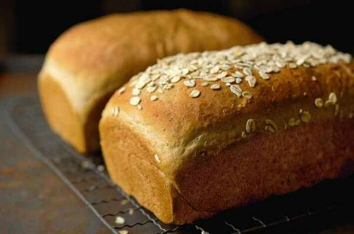
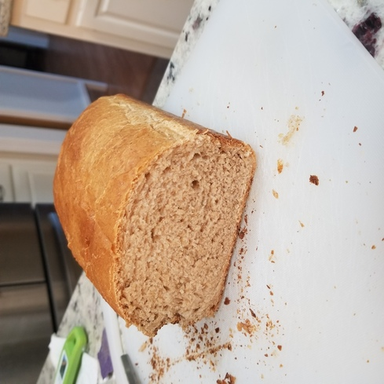

Vermont Whole Wheat Oatmeal Honey Bread
Originally from: King Arthur

Ingredients
- 2 cups (454g) boiling water
- 1 cup (89g) rolled oats, old-fashioned or quick-cooking
- 1/2 cup (78g) maple sugar or 1/2 cup (106g) brown sugar, packed
- 1 tablespoon (21g) honey
- 4 tablespoons (57g) butter
- 2 1/2 teaspoons (15g) salt
- 1 teaspoon cinnamon, Vietnamese preferred
- 1 tablespoon instant yeast
- 1 1/2 cups (170g) King Arthur White Whole Wheat Flour
- 4 cups (482g) King Arthur Unbleached All-Purpose Flour
Directions
- Combine water, oats, sugar, honey, butter, salt, cinnamon. Let cool to 100° - 110°F (around 10 - 15 minutes), stirring occasionally.
- Add yeast and flour and combind. Knead until dough is smooth and satiny.
- Let dough rise 1 hour.
- Divide dough in half and shape into a loaf. Place into greased 8 1/2" x 4 1/2" bread pans. Let rise until crowned about 1" above rim of pan (around 60 - 90 minutes).
- Bake in 350° oven for 35 - 40 minutes, tenting with foil after 25 to prevent over-browning. Remove from oven - interior should reach 190° when done. Let cool.
Notes
-
2021-02-07 - Made two loaves according to recipe above, kneaded in stand mixer. Worked fine in mixer, but was a dense enough dough so pulled away quickly enough I think. Possible could have kneaded a bit more. Cooked first right away and turned out okay. Was decently dense and came out almost like a sweet cinnamon bread. Not overly sweet, but might consider reducing sweetner amounts and cinnamon if looking for a plainer loaf. I froze the second loaf wrapped in plastic wrap and place in bread pan to rise a few days later after thawing in fridge overnight. Never really rose again even after baking. I think yeast may have been on it's last legs, may need to try freezing again with fresher yeast.
